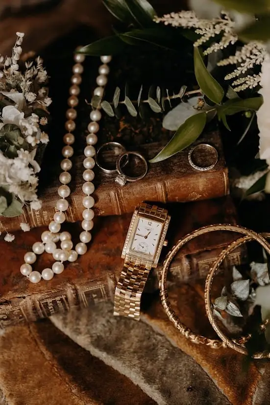

Le timeless wedding, ou mariage intemporel, séduit de plus en plus de couples en quête d’une célébration élégante, sincère et durable. Loin des effets de mode, il repose sur des choix esthétiques forts, pensés pour traverser les années avec la même émotion.
Futurs mariés, souhaitez-vous un mariage qui restera aussi élégant aujourd’hui que dans vingt ans ? En tant que wedding planner, j’accompagne les couples qui désirent créer un mariage intemporel, chic et profondément authentique.
La région bordelaise, avec ses châteaux viticoles et ses chartreuses baignés de lumière naturelle, offre un cadre idéal pour concevoir un mariage pensé dans les moindres détails.
Qu’est-ce qu’un timeless wedding
Un timeless wedding est avant tout une quête d’équilibre et de raffinement, où chaque décision contribue à créer une atmosphère à la fois chic, sobre et profondément marquante, sans jamais paraître datée. Loin des tendances éphémères, ce style repose sur une esthétique intemporelle et cohérente, pensée pour traverser les années avec élégance. Il privilégie des couleurs douces et classiques, capables de sublimer les lieux et les émotions, associées à des matières nobles comme le lin, la soie, le bois ou la céramique, qui apportent authenticité et chaleur. La décoration de mariage intemporelle se veut épurée, mais jamais minimaliste au hasard : chaque élément est choisi avec soin pour servir une scénographie élégante et harmonieuse. Une attention particulière est portée aux détails, véritables fils conducteurs de l’expérience, de la papeterie aux compositions florales, afin de créer une émotion sincère et durable. Ce style n’est pas fade, il est juste, maîtrisé et résolument émotionnel, laissant une empreinte forte dans les souvenirs bien après le jour J.

Pourquoi choisir un mariage intemporel
Dans un monde où les tendances évoluent à toute vitesse, choisir un mariage intemporel en Région Bordelaise est une véritable déclaration d’élégance et de sens. Plus qu’un simple choix esthétique, le timeless wedding incarne une vision durable, raffinée et profondément émotionnelle du jour J. Il séduit les couples en quête d’un mariage qui traverse le temps sans jamais perdre de sa beauté ni de sa modernité.
Un style qui ne se démode jamais
Opter pour un mariage intemporel, c’est faire le choix d’une esthétique classique, équilibrée et harmonieuse. Contrairement aux tendances éphémères, ce style repose sur des codes forts : des couleurs douces et naturelles, des lignes épurées, des matières nobles et une décoration pensée dans le détail. Résultat : des souvenirs visuels et photographiques qui resteront élégants aujourd’hui comme dans vingt ans.
Une élégance naturelle et maîtrisée
Le timeless wedding privilégie la justesse plutôt que l’excès. Chaque élément a une fonction et une intention : une scénographie élégante, une décoration épurée, une mise en scène fluide qui sublime le lieu sans le surcharger. Cette approche permet de créer une atmosphère chic et sophistiquée, tout en laissant respirer l’émotion et l’authenticité du moment.
Une expérience profondément émotionnelle
Un mariage intemporel touche par sa sobriété émotionnelle. En mettant l’accent sur les détails, les textures, la lumière et l’harmonie globale, il crée une ambiance douce et enveloppante. Ce style met en valeur l’essentiel : les regards, les gestes, les instants partagés. L’émotion devient le fil conducteur, sans artifices superflus.
Un choix durable et responsable
Choisir un mariage intemporel, c’est aussi s’inscrire dans une démarche plus durable. Des choix esthétiques réfléchis, des éléments réutilisables, des matériaux de qualité et une décoration pensée pour durer permettent de limiter le gaspillage tout en valorisant l’artisanat et le savoir-faire. Le timeless wedding privilégie la qualité à la quantité.
Un mariage à votre image
Enfin, le mariage intemporel offre une grande liberté de personnalisation. Il s’adapte à tous les lieux, toutes les saisons et toutes les histoires d’amour. En se détachant des tendances trop marquées, il permet de créer un univers sincère, fidèle à votre identité et à vos valeurs, pour un mariage authentique et inoubliable.
Choisir un mariage intemporel, c’est faire le pari de l’élégance durable, de l’émotion sincère et d’une esthétique qui traverse le temps avec grâce.
 © Tristan Perrier
© Tristan Perrier © Tristan Perrier
© Tristan Perrier © Tristan Perrier
© Tristan Perrier

Les codes essentiels d’un timeless wedding réussi
Un timeless wedding ne se résume pas à une simple esthétique : c’est une véritable vision, fondée sur l’équilibre, la cohérence et le sens du détail. Loin des tendances passagères, il s’appuie sur des codes forts et intemporels qui garantissent un mariage élégant, harmonieux et durable. Voici les essentiels à respecter pour créer un mariage véritablement intemporel.
1. Une palette de couleurs douce et raffinée
Les couleurs sont la base de toute scénographie réussie. Un mariage intemporel privilégie des teintes neutres et naturelles : blanc cassé, ivoire, beige, nude, gris perle ou encore des tons poudrés. Ces nuances apportent une élégance naturelle et permettent de sublimer les matières, les fleurs et les lieux sans jamais lasser le regard.
2. Une décoration épurée mais travaillée
L’intemporalité repose sur la simplicité maîtrisée. Une décoration épurée ne signifie pas minimaliste ou vide, mais pensée avec précision. Chaque élément décoratif a sa place et son utilité : compositions florales aériennes, bougies, arts de la table sobres, objets choisis avec intention. L’ensemble crée une harmonie visuelle fluide et élégante.
3. Une scénographie élégante et cohérente
Un timeless wedding réussi repose sur une scénographie globale parfaitement cohérente. De la cérémonie à la réception, chaque espace doit raconter la même histoire. L’éclairage, la disposition des tables, la circulation des invités et la mise en valeur du lieu sont pensés pour créer une expérience immersive, douce et naturelle.
4. Une attention minutieuse portée aux détails
Les détails font toute la différence dans un mariage intemporel. Papeterie élégante, typographies classiques, rubans de soie, menus délicats, fleurs soigneusement choisies… Ces petites touches renforcent l’identité du mariage et créent une émotion subtile mais durable. Rien n’est ostentatoire, tout est juste.
5. Des choix esthétiques durables
Le timeless wedding s’inscrit dans une logique de durabilité. Il favorise des éléments réutilisables, des fleurs de saison, des créations artisanales et des choix responsables. Cette approche consciente donne encore plus de sens à l’esthétique et inscrit le mariage dans une démarche respectueuse et moderne.
Les tenues

Les tenues jouent un rôle central dans l’esthétique d’un timeless wedding, car elles incarnent à la fois l’élégance, la sobriété et la durabilité. La mariée privilégie une silhouette intemporelle, aux lignes épurées et aux coupes impeccables, loin des détails trop marqués par les tendances. Les matières nobles comme la soie, le crêpe, l’organza ou la dentelle délicate apportent une sophistication naturelle, tandis que les accessoires restent discrets et soigneusement choisis. Du côté du marié, le costume se veut classique et parfaitement ajusté, dans des tons sobres tels que le noir, le bleu profond ou le gris, complété par des détails raffinés. L’objectif n’est pas d’en faire trop, mais de créer une allure juste, élégante et harmonieuse, qui traversera le temps avec grâce et sublimera les souvenirs du jour J.

Une décoration Timeless
La décoration d’un timeless wedding repose sur une esthétique épurée, cohérente et soigneusement maîtrisée, où chaque élément a une véritable intention. Loin de l’accumulation, elle privilégie des matières nobles et des formes simples qui traversent le temps avec élégance : fleurs de saison aux teintes douces, bougies, verrerie délicate, textiles naturels et arts de la table raffinés. La palette reste volontairement sobre et lumineuse, permettant de sublimer le lieu sans le dénaturer. La scénographie met en valeur l’espace, la lumière et les volumes, créant une atmosphère à la fois chaleureuse, intemporelle et profondément émotionnelle. Dans un mariage intemporel, la décoration ne cherche jamais à impressionner, mais à raconter une histoire harmonieuse, élégante et durable.
Le timeless wedding : une expérience émotionnelle
L’ambiance d’un timeless wedding à Bordeaux se construit autour de moments sincères et d’une atmosphère fluide, où l’élégance se mêle naturellement à la convivialité. Les activités sont pensées pour créer du lien et sublimer l’expérience des invités, sans jamais rompre l’harmonie du lieu ni l’esthétique globale. Musique live aux sonorités douces, quatuor à cordes, piano ou jazz feutré instaurent une émotion immédiate, tandis que des animations discrètes, livre d’or revisité, bar à champagne, ateliers personnalisés, encouragent les échanges et les souvenirs partagés. Tout est conçu pour favoriser une expérience sensorielle élégante et intemporelle, où le rythme de la journée respecte les temps forts du mariage. Dans un timeless wedding, l’ambiance ne se surjoue pas : elle se ressent, subtile, chaleureuse et profondément mémorable.
En bref,
Opter pour un timeless wedding, c’est faire le choix d’une élégance durable, d’une esthétique maîtrisée et d’une expérience sincère.
En tant que wedding planner, j’accompagne les couples qui souhaitent un mariage intemporel, harmonieux et profondément personnel. Et vous, êtes-vous prêts à imaginer un mariage qui traversera le temps avec la même intensité ?
Lovely Day Event c'est plusieurs types de prestations
L'organisation de mariage
Je vais intervenir sur toutes les étapes de vos préparatifs et vous guider dans vos choix. Je suis force de proposition pour que votre mariage ne ressemble qu’à vous.
Décoration de mariage
Créative et passionnée, je suis certifiée Wedding Designer et je conçois une ambiance scénographique qui correspond au thème de votre mariage.
Coordination le jour J
Je serai le chef d’orchestre pour gérer les différents prestataires, la mise en place de votre décoration et le déroulement de cette belle journée.